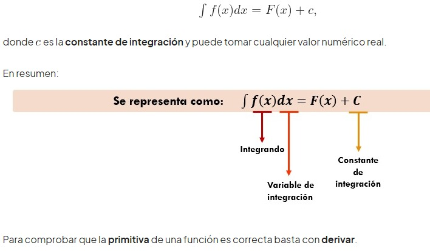

Integral indefinida es el conjunto de las infinitas primitivas que puede tener una función.
Se representa por ∫ f(x) dx.
Se lee como "la integral indefinida de f(x) respecto a x" Por lo tanto, f(x) dx es una conjunto de funciones; no es una función sola, ni un número.
La función f que se está integrando se llama el integrando, y la variable x se llama la variable de integración.
c es la constante de integración y puede tomar cualquier valor numérico real.
Si F(x) es una primitiva de f(x) se tiene que:
∫ f(x) dx = F(x) + C
Se entiende por métodos de integración cualquiera de las diferentes técnicas elementales usadas para calcular una antiderivada o integral indefinida de una función.
Así, dada una función f(x), los métodos de integración son técnicas cuyo uso (usualmente combinado) permite encontrar una función F(x) tal que
F(x)=∫ ƒ(x) dx
lo cual, por el teorema fundamental del cálculo equivale a hallar una función F(x) tal que f(x) es su derivada.
Existen varios métodos entre los que se destacan los siguientes:
Integración por Cambio de variable.
Integración por parte para integrar productos de funciones.
funciones trigonométricas.
Integración de funciones racionales.
Integral indefinida es el conjunto de las infinitas primitivas que puede tener una función.
Es importante resaltar lo siguiente:
1 La integral indefinida se representa por \int f(x)dx.
2 Se lee : integral de x diferencial de x.
3 El símbolo \int es el signo de integración.
4 f es el integrando o función a integrar.
5 dx es diferencial de x, e indica cuál es la variable de la función que se integra.
Si F es una primitiva de f se tiene que:
